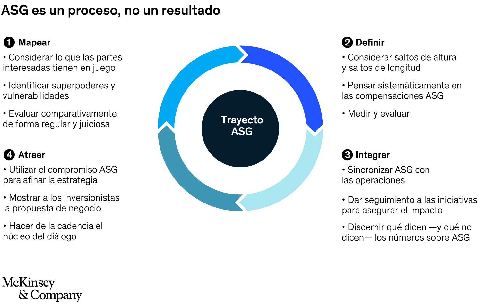

12. Plan de Actuación sobre los Aspectos ASG
El enfoque ASG (Ambiental, Social y de Gobernanza) permite evaluar la sostenibilidad y responsabilidad de una organización. En el sector TIC, un plan de actuación ASG integra prácticas sostenibles que van más allá del simple cumplimiento legal.
1. Aspectos Ambientales (A):
- Uso de energías renovables en centros de datos y oficinas.
- Diseño de software eficiente que reduzca el consumo energético.
- Minimización de residuos electrónicos y reciclaje responsable.
2. Aspectos Sociales (S):
- Promoción del teletrabajo para mejorar la conciliación personal-laboral.
- Igualdad de oportunidades y diversidad en los equipos de trabajo.
- Formación continua en competencias digitales y sostenibilidad.
3. Gobernanza (G):
- Transparencia en los procesos y decisiones de la empresa.
- Ética profesional y cumplimiento normativo en el desarrollo de software y servicios.
- Participación de los trabajadores en la toma de decisiones sostenibles.
Como equipo, alineamos nuestras decisiones con estos tres pilares ASG, asegurando que nuestras actividades sean sostenibles, inclusivas y éticamente responsables. Esta integración es clave para cumplir con el resultado de aprendizaje RA5, que exige realizar actividades minimizando su impacto ambiental y promoviendo la sostenibilidad desde una perspectiva amplia.
